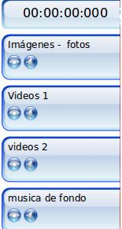
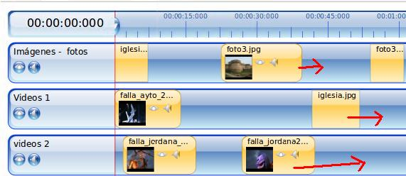
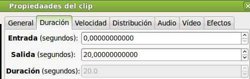
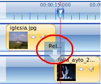

2.1. Aspectos Teóricos
1. Iniciamos el programa (Aplicaciones / Sonido y video /Editor de video Openshot).
2. Importamos a nuestro proyecto / Archivos de proyecto diferentes tipos de clips.
- Clips de Imágenes: Importamos fotografías o imágenes (1) y (2) de diversos tipos de archivos de mapa de bits (JPEG, PNG, GIF, BMP, entre otros). Hemos importado 5 imágenes para nuestro proyecto.
- Clips de Videos: importamos (3), al menos, tres ficheros de video (MP4, MOV, AVI, entre otros).
- Clip de Audio: Importamos (4) un fichero de audio (mp3, flac, ...) para mezclar su sonido con el sonido de los clips de videos.
3. Guardamos nuestro proyecto como Openshot_actividad3.
| Recuerda: guarda tu proyecto en la medida que vayas realizando acciones de edición para evitar su pérdida en caso de cierre inesperado del programa. |
 4. Añadimos dos pistas para contar con un total de cuatro. Renombramos las pistas con los siguientes nombres:
- Pista 4: Imágenes - fotos
- Pista 3: videos 1
- Pista 2: Videos 2
- Pista 1: música de fondo
5. Añadir los clips a la línea de tiempo de las diferentes pistas.
- Desplazamos las tres fotografías a la primera pista. Añadimos en la segunda pista uno de los video clip y una de las fotografías. En la Tercera pista añadimos dos clips de video y, en la última pista, añadimos el clip de sonido.
6. Modificamos la duración del clip de las diversas imágenes.
| Paso previo: desplaza las imágenes para tener espacio para la generación de nuevos frames. |
|

|
Selecciona una imagen / botón derecho / propiedades / Duración. En este caso vamos a indicar que la duración es de 20 segundos.
Le podríamos indicar los segundos de entrada y salida y la duración del clip sería la resta de ambos. Ejemplo: 5 segundos de entrada, 20 de salida, 14 de total de duración.
- Cambia las propiedades de duración de todas las imágenes de tu proyecto a 15 segundos como mínimo.
| Si deseas dividir un video clip en varios fragmentos para aplicar efectos, debemos realizarlo en este momento. |
8. Modificaremos la velocidad de reproducción de uno de los clips de video y procederemos a reconstruir nuestra línea de tiempo.
- Seleccionamos el clip de video, Botón derecho / propiedades / velocidad. En este caso duplicamos la velocidad normal de reproducción (2X). Es decir, si un video era de 10 segundos, al duplicar su velocidad, representa 5 segundos en la línea de tiempo.
- Observa el desajuste en la línea de tiempo. Ese clip antes estaba solapado con la foto superior y ahora queda un espacio vacío.
9. Procedemos a realizar las transiciones entre los diversos clips de la línea de tiempo. Ubicamos el deslizador entre los dos primeros clips (imagen - pista 1 y video - pista 2). Seleccionamos (1) la pestaña de transiciones, eligimos (2) una transición y la arrastramos entre ambos clips (3) como mostramos en la imagen.
- Por defecto la transición se realiza de abajo hacia arriba. En este caso deseamos que la transición sea de arriba hacia abajo. Queremos pasar de la pista superior (imágenes - fotos) a la pista inmediatametne inferior (videos 1). Para ello seleccionamos la transición (reloj de izquierda derecha) / botón derecho / cambiar dirección.
- Observa en la imagen de la izquierda el resultado de cambiar la dirección.
10. Aplicamos transiciones al resto de alineaciones o solapamientos entre clips (a excepción de la pista de sonido).
- La primera transición, cambiando la dirección, hace la animación entre una fotografía y un clip de video. La transición es reloj izquierda derecha.
- La transición segunda realiza una transición entre dos clips de video. Hemos cambiado la dirección y el tipo es de Espiral grande.
- La tercera es un caso especial. No hacemos la transición entre la pista tercera y la primera directamente (hay una pista intermedia) por ello ubicamos la transición (solapada) en la superior. En este caso Estrella 1.
- El cuarto caso es parecido a la anterior, no hay relación directa entre ambos clips. En este caso ubicamos la transición en la superior y es Estrella pequeña.
- El quinto caso es un solapamiento entre clips y cambiamos la dirección de la transición limpiar de abajo arriba.
- La sexta es otro solapamiento entre clips de imágenes. La transición, con cambio de dirección, es de persanas verticales.
11. Convertimos una transición en máscara. Ello conlleva que en lugar de animación se convierte en una transición estática.
- Seleccionamos la transición. Botón derecho / Propiedades / convertir en máscara.
- El resultado es una transición estática.
12. Guardamos nuestro proyecto como Openshot_actividad3.
13. Exportamos nuestro video a un fichero tipo OGG-VORBIS, perfil HDV 1080 25p HD FULL y con alta calidad.
Jo.R.C.A. 2004 - 2011

Edición de Audio y Video con Software Libre by José Ramón Cerdeira Alonso is licensed under a Creative Commons Reconocimiento-No comercial-Compartir bajo la misma licencia 3.0 España License